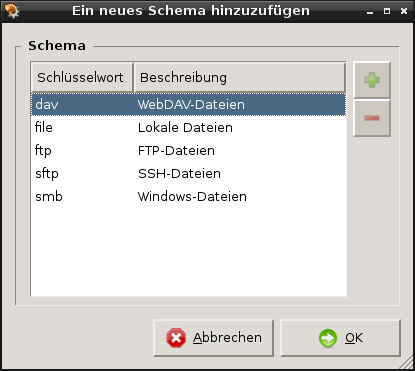

Benutzerhandbuch für das Caja-Aktionen Konfigurationswerkzeug
1. Einführung
Caja-Aktionen™ ist eine Erweiterung für Caja™, deren vorrangige Funktion es ist, dem Benutzer das Hinzufügen eigener Aktionen zu den Kontextmenüs des Dateimanagers zu ermöglichen. Diese Aktionen können in Menüs und Untermenüs angeordnet werden, exportiert und mit anderen Arbeitsumgebungen gemeinsam genutzt werden.
Das Caja-Actions Konfigurationswerkzeug ist eine Benutzerschnittstelle, die Sie bestimmen lässt, wie wo und wann Ihre Aktionen in den Kontextmenüs von Caja™ erscheinen sollen und wie sie ausgeführt werden.
Das Caja-Actions Konfigurationswerkzeug verfügt über folgende Funktionsmerkmale:
- Definieren und Konfigurieren von Aktionen von Null an.
- Organisieren von Aktionen in Menüs und Untermenüs usw.
- Importieren und Exportieren von Aktionen aus der und in die Welt außerhalb Ihrer Arbeitsumgebung.
Caja-Actions bringt noch weitere Funktionen mit, wie beispielsweise:
-
Ein Plugin für Caja, welches in Echtzeit die aktuell ausgewählten Dateien zum D-Bus-Dienst exportiert.
-
Ein Befehlszeilenprogramm, das fähig ist, irgendeine Aktion auszuführen.
Im Zusammenspiel mit der D-Bus-Schnittstelle kann der Benutzer jede Aktion über ein Tastenkürzel ausführen, wodurch die Aktion auf die aktuell im Dateimanager ausgewählten Objekte angewendet wird.
-
Ein Befehlszeilenprogramm, welches in der Lage ist, eine neue Aktion zu starten.
Alle diese Funktionsmerkmale werden eingehend in der globalen Dokumentation des Caja-Actions Konfigurationswerkzeugs beschrieben.
2. Erste Schritte
2.1. Das Caja-Actions Konfigurationswerkzeug starten
Sie können das Caja-Actions Konfigurationswerkzeug auf folgende Arten starten:
- Menü
-
Wählen Sie .
- Befehlszeile
-
Um das Caja-Actions Konfigurationswerkzeug in einer Befehlszeile zu starten, geben Sie folgenden Befehl ein:
caja-actions-config-tool
und drücken dann die Eingabetaste.
Um die verfügbaren Befehlszeilenoptionen anzuzeigen, rufen Sie folgendes Argument auf:
caja-actions-config-tool --help-all
und drücken dann die Eingabetaste.
2.2. Der erste Start
Beim Start des Caja-Actions Konfigurationswerkzeugs wird folgendes Fenster angezeigt.
Das leere Hauptfenster des Caja-Actions Konfigurationswerkzeugs
Das Hauptfenster des Caja-Actions Konfigurationswerkzeugs enthält die folgenden Elemente:
- Menüleiste.
-
Die Menüs in der Menüleiste enthalten alle Befehle, die Sie im Caja-Actions Konfigurationswerkzeug benötigen.
Für einige Befehle sind Schnellzugriffe verfügbar:
- Strg+N
-
Eine neue Aktion hinzufügen.
- Strg+S
-
Geänderte Aktionen und Menüs speichern
- Strg+Q
-
Die Anwendung beenden.
- Strg+X
-
Die aktuelle Auswahl ausschneiden, jedoch in der Zwischenablage behalten.
- Strg+C
-
Die aktuelle Auswahl in die Zwischenablage kopieren.
- Strg+V
-
Den Inhalt der Zwischenablage vor der aktuellen Position einfügen.
- Umschalttaste+Strg+V
-
Den Inhalt der Zwischenablage als Unterelement(e) des aktuellen Objekts einfügen.
- Entf
-
Die momentane Auswahl löschen.
- F5
-
Aktionen und Menüs neu laden.
- F1
-
Hilfe anzeigen.
- Werkzeugleiste.
-
Verschiedene Werkzeugleisten können unterhalb der Menüleiste angezeigt werden, abhängig von Ihren Einstellungen im Untermenü .
- Objektliste.
-
Die Liste an der linken Seite des Hauptfensters enthält alle Objekte, gleich ob es sich um Aktionen oder Menüs handelt, die aktuell zur Bearbeitung im Caja-Actions Konfigurationswerkzeug zur Verfügung stehen.
Objekte können in alphabetischer oder umgekehrter alphabetischer Reihenfolge sortiert werden. Eine unsortierte Anzeige ist ebenfalls möglich, so dass der Benutzer die Objekte direkt selbts sortieren und verwalten kann.
Ungültige Einträge werden in roter Farbe dargestellt.
Geänderte Objekte werden in kursiver Schrift dargestellt.
- Sortierknöpfe
-
Drei Knöpfe ermöglichen Ihnen das Umschalten zwischen den Sortierungsmodi.
- Reiter für Eigenschaften.
-
Im rechten Teil des Hauptfensters wird alles angezeigt, was zum Definieren benötigt wird, wie, wann und wo Menüs angezeigt werden sollen.
- Aktion/Menü
-
Legen Sie fest, in welchen Caja™-Menüs das Objekt erscheinen soll und auf welche Weise es angezeigt wird.
- Befehl
-
Legen Sie fest, welcher Befehl ausgeführt wird und welche Parameter übergeben werden sollen.
- Ausführung
-
Geben Sie an, wie der Befehl ausgeführt werden soll.
- Basisnamen
-
Legen Sie die Filter für Basisnamen fest, denen die Auswahl in Caja™ entsprechen muss, damit die Aktion oder das Menü für die Anzeige infrage kommt.
- MIME-Typen
-
Legen Sie die Filter für MIME-Typen fest, denen die Auswahl in Caja™ entsprechen muss, damit die Aktion oder das Menü für die Anzeige infrage kommt.
- Ordner
-
Legen Sie die Filter für Ordner fest, denen die Auswahl in Caja™ entsprechen muss, damit die Aktion oder das Menü für die Anzeige infrage kommt.
- Schemata
-
Legen Sie die Schema-Filter fest, denen die Auswahl in Caja™ entsprechen muss, damit die Aktion oder das Menü für die Anzeige infrage kommt.
- Fähigkeiten
-
Legen Sie die Filter für Fähigkeiten fest, denen die Auswahl in Caja™ entsprechen muss, damit die Aktion oder das Menü für die Anzeige infrage kommt.
- Umgebung
-
Legen Sie einige Umgebungsbedingungen fest, denen die Auswahl in Caja™ entsprechen muss, damit die Aktion oder das Menü für die Anzeige infrage kommt.
- Eigenschaften
-
Eigenschaften eines Objekts anzeigen.
- Statuszeile.
-
Die Statuszeile zeigt einige Statusinformationen über die aktuell ausgewählte Zeile in der Objektliste an.
Wenn keine relevanten Informationen zur Anzeige vorhanden sind, dann zeigt die Statuszeile die Anzahl der geladenen Menüs, Aktionen und Profile an.
Das Symbol für »schreibgeschützt«
 wird im rechten Teil der Statuszeile angezeigt, sofern zutreffend.
wird im rechten Teil der Statuszeile angezeigt, sofern zutreffend.
2.3. Erstellen Ihrer ersten Aktion
In diesem Beispiel erstellen wir eine Aktion, die einige nützliche Informationen über die aktuelle Auswahl zur Verfügung stellt.
Diese Aktion benötigt MateDialog™.
MateDialog™ ist ein Programm, das Ihnen die Erstellung grafischer Oberflächen über die Befehlszeile ermöglicht.
Sie sollten sicherstellen, dass dieses Programm auf Ihrem System installiert ist, indem Sie beispielsweise folgenden Befehl in einem Terminal aufrufen:
matedialog
und drücken dann die Eingabetaste.
Um eine neue Aktion zu erstellen, wählen Sie .
Eine neue Aktion wird in die Objektliste eingefügt und deren Eigenschaften werden in den Reitern im rechten Teilfenster angezeigt.
Die Bezeichnung der aktuell ausgewählten Aktion (dieses) wird zum Anwendungsnamen in der Titelleiste hinzugefügt.
Vorgegebenen Eigenschaften einer neuen Aktion
In der Objektliste wird die neue Aktion in kursiver Schrift dargestellt.
Kursivschrift wird verwendet, um den Benutzer daran zu erinnern, dass das Objekt noch nicht gespeichert wurde.
Eine weitere Erinnerung daran, dass es ungespeicherte Änderungen gebt, ist ein Asterisk (*), der dem Anwendungsnamen in der Titelzeile vorangestellt wird.
Im Wesentlichen geht es hierbei darum, wie Ihre Aktion in den Kontextmenüs des Dateimanagers angezeigt wird.
-
Geben Sie Meine erste Aktion im Eingabefeld Bezeichnung des Kontextmenüeintrages ein.
Das Eingabefeld Bezeichnung des Kontextmenüeintrages enthält die Bezeichnung der Aktion, so wie Sie im Kontextmenü des Dateimanagers erscheinen soll.
Diese Bezeichnung ist eine obligatorische Eigenschaft. Falls sie leer ist, dann wird Ihre Aktion durch Caja-Actions™ als ungültig erkannt: Sie wird in roter Farbe in der Objektliste angezeigt und nie für die Anzeige in den Kontextmenüs des Dateimanagers in Betracht gezogen.
-
Geben Sie Es wird eine Aktion mit einigen Parametern ausgeführt in das Eingabefeld Minihilfe ein.
Im Eingabefeld Minihilfe können Sie einen Text eingeben, der als kurze Hilfe zu Ihrer Aktion angezeigt wird.
-
Wählen Sie
 in der Auswahlliste Symbol.
in der Auswahlliste Symbol.Die Symbol-Auswahl legt das Symbol fest, das Ihrer Aktion in den Kontextmenüs des Dateimanagers und in der Werkzeugleiste zugeordnet wird.
Sie haben zwei Möglichkeiten, Ihrer Aktion ein Symbol zuzuordnen:
- Klicken Sie in die Auswahlliste Symbol, um ein Symbol auszuwählen.
- Klicken Sie auf , um im Dateisystem nach einer Bilddatei zu suchen.
Wenn Sie Ihre Aktion im Kontextmenü des Dateimanagers auswählen, wird dieser Befehl mit den von Ihnen angegebenen Argumenten ausgeführt.
Klicken Sie auf den Reiter Befehl, um einen Befehl eingeben zu können.
-
Geben Sie matedialog in das Eingabefeld Pfad ein.
Das Eingabefeld Pfad legt den Befehl fest, der ausgeführt wird, wenn Sie diese Aktion in den Kontextmenüs des Dateimanagers auswählen.
Es gibt zwei Möglichkeiten, den auszuführenden Befehl festzulegen:
- Geben Sie ihn in das Eingabefeld Pfad ein.
- Klicken Sie auf , um im Dateisystem nach einer ausführbaren Datei zu suchen.
Falls Sie den Befehl ohne absoluten Pfad eingeben, wird zur Ausführungszeit in der Variable PATH danach gesucht.
-
Geben Sie --info --text='%c selected item(s): %U' in das Eingabefeld Parameter ein.
Die Parameter enthalten die Argumente, die bei der Ausführung dem Befehl übergeben werden sollen. In diesen Argumente können eingebettete Parameter enthalten sein, die zur Ausführung expandiert werden.
Wenn sowohl Pfad als auch Parameter leer sind, dann wird Ihre Aktion als ungültig erkannt: Sie wird in roter Farbe in der Objektliste angezeigt und nie für die Anzeige in den Kontextmenüs des Dateimanagers in Betracht gezogen.
Um sämtliche ausstehenden Änderungen zu speichern, wählen Sie .
Caja™ berücksichtigt Ihre neue Aktion automatisch und zeigt Sie in seinem Kontextmenü an.
Ihre erste Aktion im Kontextmenü von Caja™
Durch Anklicken des Objekts im Kontextmenü von Caja™ wird es aktiviert und der zugehörige Befehl ausgeführt.
3. Caja-Actions Konfigurationswerkzeug verwenden
- 3.1. Definieren der Bedingungen
- 3.2. Bestimmung des Ortes der Aktion
- 3.3. Welche Aktion soll ausgeführt werden?
- 3.4. Verwendung von Profilen zur Erweiterung Ihrer Aktion
- 3.5. Organisieren von Aktionen in Menüs
- 3.6. Die Objektliste sortieren
- 3.7. Bearbeiten
- 3.8. Speichern Ihrer Änderungen
- 3.9. Exportieren Ihrer Aktionen
- 3.10. Importieren von Aktionen
- 3.11. Festlegen Ihrer persönlichen Einstellungen
3.1. Definieren der Bedingungen
Ob Ihre Aktion tatsächlich in den Kontextmenüs der Dateiverwaltung Caja™ oder in dessen Werkzeugleiste angezeigt wird, hängt von den Bedingungen ab, die Sie dafür definiert haben.
Diese Bedingungen können sich auf den Ort beziehen, an dem der Dateimanager gerade geöffnet ist oder auf die aktuell ausgewählten Objekte an diesem Ort.
Bei jeder Änderung des Ortes oder der ausgewählten Dateien prüft Caja-Actions™ alle Ihre Aktionen und vergleicht sie mit den definierten Bedingungen hinsichtlich des neuen Ortes und der Dateiauswahl. Alle Bedingungen müssen erfüllt sein, damit Ihre Aktion tatsächlich angezeigt wird.
- 3.1.1. Auf dem Basisnamen basierende Bedingungen
- 3.1.2. Auf dem MIME-Typ basierende Bedingungen
- 3.1.3. Auf Ordnern basierende Bedingungen
- 3.1.4. Auf Schemata basierende Bedingungen
- 3.1.5. Auf Fähigkeiten basierende Bedingungen
- 3.1.6. Bedingung zur Anzahl der Auswahl
- 3.1.7. Auswahl der Arbeitsumgebung
- 3.1.8. Bedingung für ausführbare Datei
- 3.1.9. Bedingung für eine D-Bus-Registrierung
- 3.1.10. Angepasste Bedingung
- 3.1.11. Bedingung für laufende Prozesse
3.1.1. Auf dem Basisnamen basierende Bedingungen
Sie können festlegen, dass Ihre Aktion abhängig von den Basisnamen der aktuell im Dateimanager ausgewählten Objekte angezeigt werden soll. Dazu muss ein gewisser Teil der Basisnamen der Objekte übereinstimmen, wobei Sie außerdem gleichzeitig festlegen können, dass ein weiterer Basisnamenteil nicht in den gewählten Objekten vorkommen darf.
Klicken Sie auf den Reiter Basisnamen, um die auf Basisnamen basierenden Bedingungen zu konfigurieren.
Der Reiter für auf Basisnamen basierende Bedingungen
Faktisch werden auf Basisnamen basierende Bedingungen als eine Liste aus Mustern erstellt, die entweder die Form »muss mit einem von … übereinstimmen« oder »darf nicht mit einem von … übereinstimmen« haben. Damit Ihre Aktion auf Basisnamen basierende Bedingungen verarbeiten kann, muss jedes Element der Auswahl für eine der aufgelisteten Bedingungen gültig sein: Der Basisname jedes Elements muss auf mindestens eines der »muss mit einem von … übereinstimmen«-Muster passen und darf nicht auf eines der »darf nicht mit einem von … übereinstimmen«-Muster passen.
Falls mindestens ein Element der Auswahl nicht alle definierten Bedingungen erfüllt, dann wird Ihre Aktion nicht angezeigt.
Wenn Ihre Aktion für das Kontextmenü der Auswahl bestimmt ist, dann werden die auf Basisnamen basierenden Bedingungen auf die aktuell ausgewählten Objekte angewendet. Wenn Ihre Aktion dagegen für das Kontextmenü des Ortes oder für die Werkzeugleiste bestimmt ist, dann werden die auf Basisnamen basierenden Bedingungen auf den Basisnamen des aktuellen Ortes angewendet.
Die Definition einer neuen auf Basisnamen basierenden Bedingung umfasst zwei Schritte.
-
Definiert die neue Filterbedingung.
-
Drücken Sie Einf oder klicken Sie auf den Knopf
 , um eine neue Filterbedingung einzufügen.
, um eine neue Filterbedingung einzufügen. -
Bearbeiten Sie die neu eingefügte Filterbedingung, so dass sie den gewünschten Basisnamen enthält.
Eine auf dem Basisnamen beruhende Bedingung darf die Platzhalterzeichen * oder ? enthalten.
-
-
Gibt an, ob es sich um eine Bedingung der Form »muss mit einem von … übereinstimmen« oder »darf nicht mit einem von … übereinstimmen« handelt.
Klicken Sie auf den Radioknopf Muss einem entsprechen von oder Muss allen entsprechen von in der gleichen Zeile, um die jeweilige Bedingung festzulegen.
Abhängig von dem Betriebssystem, auf das Sie abzielen, stellen Sie bitte sicher, dass das Ankreuzfeld Groß-/Kleinschreibung beachten aktiviert ist oder nicht.
-
Wenn aktiviert, wird für alle Filter die Groß- und Kleinschreibung beachtet, was bedeutet, dass /meine/datei und /Meine/Datei unterschiedlich gewertet werden.
Dies ist das vorgegebene Verhalten auf Unix-ähnlichen Systemen.
-
Wenn deaktiviert, wird für alle Filter die Groß- und Kleinschreibung nicht beachtet, was bedeutet, dass /meine/datei und /Meine/Datei gleich gewertet werden.
Das ist höchstwahrscheinlich dann der Fall, wenn Sie auf eines der Windows™-Betriebssysteme abzielen.
Drücken Sie Entf oder klicken Sie auf den Knopf  , um eine neue Filterbedingung zu entfernen.
, um eine neue Filterbedingung zu entfernen.
Per Voreinstellung ist eine Filterbedingung »muss einem von * entsprechen«. Weil alle Basisnamen immer die Bedingung »*« erfüllen bedeutet dies, dass auf Basisnamen basierende Filterbedingungen als nicht relevant für die Aktion angesehen werden.
3.1.2. Auf dem MIME-Typ basierende Bedingungen
Sie können festlegen, dass Ihre Aktion abhängig von den MIME-Typen der aktuell im Dateimanager ausgewählten Objekte angezeigt werden soll. Dazu muss jedes Objekt der Auswahl einem bestimmten MIME-Typ entsprechen, wobei Sie außerdem gleichzeitig festlegen können, dass keines der ausgewählten Objekte einem anderen anzugebenden MIME-Typ entsprechen darf.
Klicken Sie auf den Reiter MIME-Typen, um auf dem MIME-Typen basierende Bedingungen festzulegen.

Der Reiter für auf dem MIME-Typ basierende Bedingungen
Faktisch werden auf dem MIME-Typ basierende Bedingungen als eine Liste aus Mustern erstellt, die entweder die Form »muss mit einem von … übereinstimmen« oder »darf nicht mit einem von … übereinstimmen« haben. Damit Ihre Aktion auf dem MIME-Typ basierende Bedingungen verarbeiten kann, muss jedes Element der Auswahl für eine der aufgelisteten Bedingungen gültig sein: Der MIME-Typ jedes Elements muss auf mindestens eines der »muss mit einem von … übereinstimmen«-Muster passen und darf nicht auf eines der »darf nicht mit einem von … übereinstimmen«-Muster passen.
Falls mindestens ein Element der Auswahl nicht alle definierten Bedingungen erfüllt, dann wird Ihre Aktion nicht angezeigt.
Wenn Ihre Aktion für das Kontextmenü der Auswahl bestimmt ist, dann werden die auf dem MIME-Typ basierenden Bedingungen auf die aktuell ausgewählten Objekte angewendet. Wenn Ihre Aktion dagegen für das Kontextmenü des Orts oder für die Werkzeugleiste bestimmt ist, dann werden Ihre auf dem MIME-Typ basierenden Bedingungen gegen den MIME-Typ des aktuellen Orts angewendet. Letzter ist der sehr bekannte MIME-Typ »inode/directory«.
Die Definition einer neuen auf dem MIME-Typ basierenden Bedingung umfasst zwei Schritte.
-
Definiert die neue Filterbedingung.
-
Drücken Sie Einf oder klicken Sie auf den Knopf
, um eine neue Filterbedingung einzufügen. -
Bearbeiten Sie die neu eingefügte Filterbedingung, so dass sie den gewünschten MIME-Typen enthält.
Ein MIME-Typ muss als Ausdruck der Form gruppe/untergruppe definiert werden.
Der Platzhalter * wird nur in einigen Situationen unterstützt:
- Der Ausdruck */* trifft auf alle MIME-Typen zu. Als bequeme Abkürzung wird das Literal * für den gleichen Zweck akzeptiert.
- Die Zeichenkette »group/*« trifft auf alle Untergruppen des group-MIME-Typen zu.
- Die Zeichenkette */subgroup wird nicht als gültiger Platzhalter akzeptiert.
-
-
Gibt an, ob es sich um eine Bedingung der Form »muss mit einem von … übereinstimmen« oder »darf nicht mit einem von … übereinstimmen« handelt.
Klicken Sie auf den Radioknopf Muss einem entsprechen von oder Muss allen entsprechen von in der gleichen Zeile, um die jeweilige Bedingung festzulegen.
Drücken Sie Entf oder klicken Sie auf den Knopf , um eine Filterbedingung zu entfernen.
Per Voreinstellung ist eine auf einem MIME-Typ basierende Filterbedingung »muss einem von */* entsprechen«. Weil alle Basisnamen immer die Bedingung »*/*« erfüllen, bedeutet dies, dass MIME-Typen als nicht relevant für die Aktion angesehen werden.
- all/all
-
Trifft auf alle Objekte zu.
- all/allfiles
-
Bezieht alle regulären Dateien ein.
- inode/directory
-
Bezieht nur Ordner ein.
3.1.3. Auf Ordnern basierende Bedingungen
Sie können festlegen, dass Ihre Aktion abhängig von dem Ordner der aktuell im Dateimanager ausgewählten Objekte angezeigt werden soll. Dazu muss sich jedes Objekt der Auswahl in einer bestimmten Hierarchie befinden, wobei Sie außerdem gleichzeitig festlegen können, dass keines der Objekte in einer anderen Hierarchie liegen darf.
Eine auf Ordnern basierende Bedingung muss als die Spezifikation einer Hierarchie angesehen werden, in welcher das aktuell untersuchte Objekt (nicht) verbleiben soll. Es ist ein Muster des Ordnernamens des Elements.
Klicken Sie auf den Reiter Ordner, um die auf Ordnern basierenden Bedingungen zu konfigurieren.
Der Reiter für auf Ordnern basierende Bedingungen
Tatsächlich werden auf Ordnern basierende Bedingungen als eine Liste von »Muss einem entsprechen von« und »Darf keinem entsprechen von« erstellt. Damit Ihre Aktion auf Ordnern basierende Bedingungen verarbeiten kann, muss jedes Element der Auswahl für eine der aufgelisteten Bedingungen gültig sein: Jedes Element muss sich in einem der unter »muss mit einem von … übereinstimmen« aufgeführten Ordner befinden und darf nicht mit einem der unter »darf nicht mit einem von … übereinstimmen« aufgeführten Ordnernamen übereinstimmen.
Falls mindestens ein Element der Auswahl nicht alle definierten Bedingungen erfüllt, dann wird Ihre Aktion nicht angezeigt.
Wenn Ihre Aktion für das Kontextmenü der Auswahl bestimmt ist, dann werden Ihre auf Ordnern basierenden Bedingungen auf den Ordnernamen jedes aktuell ausgewählten Objekts angewendet. Wenn Ihre Aktion dagegen für das Kontextmenü des Orts oder für die Werkzeugleiste bestimmt ist, dann werden Ihre auf Ordnern basierenden Bedingungen auf den aktuellen Ort angewendet.
Die Definition einer neuen auf Ordnern basierenden Bedingung umfasst zwei Schritte.
-
Definiert die neue Filterbedingung.
-
Drücken Sie Einf oder klicken Sie auf den Knopf
, um eine neue Filterbedingung einzufügen. -
Bearbeiten Sie die neu eingefügte Filterbedingung, so dass sie den gewünschten Ordner enthält.
Die Zeichen * und ? werden auf jeder Ebene des definierten Ordnerfilters als Platzhalter akzeptiert.
-
Oder klicken Sie auf , um einen Ordner im Dateisystem auszuwählen.
-
-
Gibt an, ob es sich um eine Bedingung der Form »muss mit einem von … übereinstimmen« oder »darf nicht mit einem von … übereinstimmen« handelt.
Klicken Sie auf den Radioknopf Muss einem entsprechen von oder Muss allen entsprechen von in der gleichen Zeile, um die jeweilige Bedingung festzulegen.
Drücken Sie Entf oder klicken Sie auf den Knopf , um eine definierte Ordner-basierte Filterbedingung zu entfernen.
Per Voreinstellung ist eine auf Ordnern basierende Filterbedingung »muss einem von / entsprechen«. Weil »/« immer die oberste Ebene eines Unix-ähnlichen Dateisystems ist, erfüllen alle gewählten Objekte immer diese Bedingung.
Wenn das Ziel ein Windows™-Betriebssystem ist, dann dürfte dieser Vorgabewert nicht derjenige sein, den Sie tatsächlich benötigen.
3.1.4. Auf Schemata basierende Bedingungen
Sie können festlegen, dass Ihre Aktion abhängig von den Schemata der Adressen der aktuell im Dateimanager ausgewählten Objekte angezeigt werden soll. Dazu muss jedes Objekt ein bestimmtes Schema haben, wobei Sie außerdem gleichzeitig festlegen können, dass keines der Objekte ein anderes Schema haben darf.
Klicken Sie auf den Reiter Schemata, um die auf Schemata basierenden Bedingungen zu konfigurieren.
Faktisch werden auf Schemata basierte Bedingungen als eine Liste aus Mustern erstellt, die entweder die Form »muss mit einem von … übereinstimmen« oder »darf nicht mit einem von … übereinstimmen« haben. Damit Ihre Aktion auf Basisnamen basierende Bedingungen verarbeiten kann, muss jedes Element der Auswahl für eine der aufgelisteten Bedingungen gültig sein: Der Basisname jedes Elements muss auf mindestens eines der »muss mit einem von … übereinstimmen«-Muster passen und darf nicht auf eines der »darf nicht mit einem von … übereinstimmen«-Muster passen.
Falls mindestens ein Element der Auswahl nicht alle definierten Bedingungen erfüllt, dann wird Ihre Aktion nicht angezeigt.
Wenn Ihre Aktion für das Kontextmenü der Auswahl bestimmt ist, dann werden die auf Schemata basierende Bedingungen auf die aktuell ausgewählten Objekte angewendet. Wenn Ihre Aktion dagegen für das Kontextmenü des Orts oder für die Werkzeugleiste bestimmt ist, dann werden die auf Schemata basierenden Bedingungen auf das Schema des aktuellen Orts angewendet.
Die Definition einer neuen auf Schemata basierenden Bedingung umfasst zwei Schritte.
-
Definiert die neue Filterbedingung.
-
Drücken Sie Einf oder klicken Sie auf den Knopf
, um eine neue Filterbedingung einzufügen. -
Bearbeiten Sie die neu eingefügte Filterbedingung, so dass sie das gewünschte Schema enthält.
Auf Schemata basierende Bedingungen akzeptieren nur den Platzhalter »*«, welcher »Jedes Schema« bedeutet.
-
Oder klicken Sie auf , um eines der unter definierten Schemata auszuwählen.
Abbildung 10 Auswahl eines Schemas aus vordefinierten SchemataAuswahl eines Schemas aus vordefinierten Schemata
Ein neues Schema darf hier nur ausgewählt werden, wenn es nicht bereits als Schema-Filter definiert wurde.
Um ein neues Schema auszuwählen, klicken Sie auf oder doppelklicken Sie auf die gewünschte Zeile.
-
-
Gibt an, ob es sich um eine Bedingung der Form »muss mit einem von … übereinstimmen« oder »darf nicht mit einem von … übereinstimmen« handelt.
Klicken Sie auf den Radioknopf Muss einem entsprechen von oder Muss allen entsprechen von in der gleichen Zeile, um die jeweilige Bedingung festzulegen.
Drücken Sie Entf oder klicken Sie auf den Knopf , um eine auf Schemata basierende Filterbedingung zu entfernen.
Per Voreinstellung entspricht eine auf Schemata basierende Filterbedingung »muss einem von * entsprechen«. Dies bedeutet, dass Schemata für diese Aktion nicht relevant sind.
3.1.5. Auf Fähigkeiten basierende Bedingungen
Als Fähigkeiten werden hier Eigenschaften bezeichnet, die eine Datei dem Benutzer anbietet.
But except for the Local capability, all others depend on the user who executes the command.
Sie können festlegen, ob Ihre Aktion angezeigt werden soll oder nicht, abhängig von den Fähigkeiten der ausgewählten Objekte bzw. dem aktuellen Benutzer.
Klicken Sie auf den Reiter Fähigkeiten, um die auf den zur Verfügung stehenden Fähigkeiten basierenden Bedingungen zu konfigurieren.
Der Reiter für auf Fähigkeiten basierende Bedingungen
Faktisch werden auf Fähigkeiten basierende Bedingungen als eine Liste aus Mustern erstellt, die entweder die Form »muss mit einem von … übereinstimmen« oder »darf nicht mit einem von … übereinstimmen« haben. Damit Ihre Aktion auf Fähigkeiten basierende Bedingungen verarbeiten kann, muss jedes Element der Auswahl für eine der aufgelisteten Bedingungen gültig sein: Die Fähigkeit jedes Elements muss auf mindestens eines der »muss mit einem von … übereinstimmen«-Muster passen und darf nicht auf eines der »darf nicht mit einem von … übereinstimmen«-Muster passen.
Falls mindestens ein Element der Auswahl nicht alle definierten Bedingungen erfüllt, dann wird Ihre Aktion nicht angezeigt.
Wenn Ihre Aktion für das Kontextmenü der Auswahl bestimmt ist, dann werden die auf Fähigkeiten basierende Bedingungen auf die aktuell ausgewählten Objekte angewendet. Wenn Ihre Aktion dagegen für das Kontextmenü des Orts oder für die Werkzeugleiste bestimmt ist, dann werden die auf Fähigkeiten basierenden Bedingungen auf jene des aktuellen Orts angewendet.
Die Definition einer neuen auf Fähigkeiten basierenden Bedingung umfasst zwei Schritte.
-
Definiert die neue Filterbedingung.
-
Drücken Sie Einf zum Einfügen eines neuen auf Fähigkeiten basierenden Filters.
-
Bearbeiten Sie die neu eingefügte Filterbedingung, so dass sie die gewünschte Fähigkeit enthält.
-
Oder klicken Sie auf
zum Öffnen des Dialogs Eine neue Fähigkeit hinzufügen.Eine neue Fähigkeit darf hier nur ausgewählt werden, wenn es nicht bereits als Fähigkeiten-Filter definiert wurde.
Um eine neue Fähigkeit auszuwählen, klicken Sie auf oder doppelklicken Sie auf die gewünschte Zeile.
-
-
Gibt an, ob es sich um eine Bedingung der Form »muss mit allen von … übereinstimmen« oder »darf nicht mit einem von … übereinstimmen« handelt.
Klicken Sie auf den Radioknopf Muss allen entsprechen von oder Darf keinem entsprechen von in der gleichen Zeile, um die jeweilige Bedingung festzulegen.
Drücken Sie Entf oder klicken Sie auf den Knopf , um einen definierten Fähigkeiten-Filter zu entfernen.
Per Voreinstellung ist die Liste der auf Fähigkeiten basierenden Filter leer. Somit sind auf Fähigkeiten basierende Bedingungen für diese Aktion nicht relevant.
3.1.6. Bedingung zur Anzahl der Auswahl
Sie können festlegen, dass Ihre Auswahl nur dann erscheint, wenn die gegenwärtige Auswahl im Dateimanager einer genauen Anzahl der Objekte entspricht oder eine genaues Verhältnis zu einer gegebenen Anzahl hat.
Falls Ihre Aktion aus der Anzeige der Unterschiede zwischen zwei Dateien besteht, können Sie hier beispielsweise Count = (equal to) 2 angeben.
Klicken Sie auf den Reiter Umgebung, um die von der Umgebung abhängigen Bedingungen zu konfigurieren.
Der Reiter für auf der Umgebung basierende Bedingungen
Die Bedingung Auswahlanzahl wird im Feld Erscheint, wenn die Auswahl enthält definiert.
Wenn Ihre Aktion für das Kontextmenü der Auswahl bestimmt ist, dann wird die hier definierte Zählbedingung mit der aktuellen Zahl ausgewählter Objekte verglichen. Wenn Ihre Aktion dagegen für das Kontextmenü des Orts oder für die Werkzeugleiste bestimmt ist, dann wird die Zählbedingung mit Null verglichen, weil es in diesem Fall kein ausgewähltes Objekt gibt.
So definieren Sie eine Bedingung für eine Auswahlanzahl:
-
Wählen Sie in der Auswahlliste Anzahl den Operator aus, den Sie auf die Auswahlanzahl anwenden wollen:
< (definitiv kleiner als) = (entspricht) > (definitiv größer als) -
Geben Sie die gewünschte Auswahlanzahl ein.
Die Auswahlanzahl hat als Voreinstellung »Anzahl > (streng größer als) 0«. Dies bedeutet, dass die Aktion als Kandidat zum Anzeigen in Frage kommt, sobald mehr als ein Objekt in der Dateiverwaltung ausgewählt ist.
3.1.7. Auswahl der Arbeitsumgebung
Sie können festlegen, dass Ihre Aktion:
- immer erscheint,
- oder nur in bestimmten angegebenen Arbeitsumgebungen erscheint,
- oder in bestimmten angegebenen Arbeitsumgebungen nicht erscheint.
Innerhalb dieser drei Möglichkeiten ist nur eine Auswahl möglich.
Klicken Sie auf den Reiter Umgebung, um die von der Umgebung abhängigen Bedingungen zu konfigurieren.
Die Auswahl der Arbeitsumgebung wird im Feld Arbeitsumgebung definiert.
So definieren Sie die Arbeitsumgebung:
-
Wählen Sie zunächst den Typ des zu verwendenden Filters:
should your action always appear, regardless of the desktop environment ? should your action only appear in some desktop environment(s) ? should your action never appear in some desktop environment(s) ? -
Sollte Ihre Aktion nicht immer erscheinen, so wählen Sie die entsprechende(n) Arbeitsumgebung(en) in der Auswahlliste auf der rechten Seite.
The targeted desktop environment condition defaults to « Always appear », which means that the action will be a candidate to be displayed regardless of the current desktop environment.
3.1.8. Bedingung für ausführbare Datei
Sie können festlegen, dass Ihre Aktion nur dann erscheinen wird, wenn einige notwendige Pakete auf dem System installiert sind. Für diese Prüfung geben Sie hier eine bestimmte Datei an, die von einem Paket installiert wird. Die Datei muss im Dateisystem vorhanden und ausführbar sein.
Klicken Sie auf den Reiter Umgebung, um die von der Umgebung abhängigen Bedingungen zu konfigurieren.
Die Bedingung »ausführbare Datei vorhanden« ist im Feld Ausführungsumgebung definiert.

Geben Sie zum Festlegen der relevanten Datei deren vollen Dateinamen in das Eingabefeld Erscheint, wenn die Datei ausführbar ist ein, oder klicken Sie auf und wählen Sie eine Datei im Dateisystem.
Lassen Sie das Feld leer, wenn die Bedingung für Ihre Aktion irrelevant ist.
Sie können einige Parameter in den gesuchten Dateinamen einbetten. Diese Parameter werden dynamisch zur Ausführungszeit mit Werten ersetzt, die von den ausgewählten Objekt(en) abhängen.
3.1.9. Bedingung für eine D-Bus-Registrierung
Sie können festlegen, dass Ihre Aktion nur dann erscheinen soll, wenn ein bestimmter Name zur Ausführungszeit am D-Bus-System registriert ist.
Klicken Sie auf den Reiter Umgebung, um die von der Umgebung abhängigen Bedingungen zu konfigurieren. Wählen Sie anschließend Ausführungsumgebung.
Geben Sie zum Definieren den relevanten Namen in das Eingabefeld Erscheint, wenn der Name bei D-Bus registriert ist ein.
Lassen Sie das Feld leer, wenn die Bedingung für Ihre Aktion irrelevant ist.
Sie können einige Parameter in den gesuchten Namen einbetten. Diese Parameter werden dynamisch zur Ausführungszeit mit Werten ersetzt, die von den ausgewählten Objekt(en) abhängen.
3.1.10. Angepasste Bedingung
Sie können festlegen, dass Ihre Aktion nur dann erscheinen wird, wenn ein bestimmter Befehl die Zeichenkette true auf die Standardausgabe ausgibt.
Klicken Sie auf den Reiter Umgebung, um die von der Umgebung abhängigen Bedingungen zu konfigurieren. Wählen Sie anschließend Ausführungsumgebung.
So können Sie Ihren eigenen angepassten Bedingungsfilter definieren, indem Sie ein kleines Skript schreiben, dass gegebenenfalls die Zeichenkette true auf die Standardausgabe ausgibt.
Geben Sie zum Definieren den Befehl in das Eingabefeld Erscheint, wenn der Befehl »true« ausgibt ein.
Lassen Sie das Feld leer, wenn die Bedingung für Ihre Aktion irrelevant ist.
Sie können einige Parameter in den Dateinamen einbetten, der ausgeführt wird, oder in dessen Optionen. Diese Parameter werden zur Laufzeit dynamisch mit Werten ersetzt, die von den gewählte(n) Objekt(en) abhängen.
3.1.11. Bedingung für laufende Prozesse
Sie können bestimmten, dass Ihre Aktion nur dann erscheinen wird, wenn ein bestimmter Prozess aktuell ausgeführt wird.
Klicken Sie auf den Reiter Umgebung, um die von der Umgebung abhängigen Bedingungen zu konfigurieren. Wählen Sie anschließend Ausführungsumgebung.
Geben Sie zum Festlegen der Binärdatei deren Namen in das Eingabefeld Erscheint, wenn die Binärdatei ausgeführt wird ein, oder klicken Sie auf und wählen Sie eine Datei im Dateisystem.
Selbst wenn Sie den vollen Dateinamen der Binärdatei angeben, so wird zur Laufzeit nur nach dem Basisnamen in der Prozessliste gesucht.
Lassen Sie das Feld leer, wenn die Bedingung für Ihre Aktion irrelevant ist.
Sie können einige Parameter in den gesuchten Namen einbetten. Diese Parameter werden dynamisch zur Ausführungszeit mit Werten ersetzt, die von den ausgewählten Objekt(en) abhängen.
3.2. Bestimmung des Ortes der Aktion
Die Dateiverwaltung Caja™ zeigt u.U. Ihre Aktion an verschiedenen Stellen an, je nach dem, was Sie hier angeben und welche Objekte ausgewählt sind.
Klicken Sie auf den Reiter Aktion, um die Orte Ihrer Aktionsziele zu konfigurieren.
- 3.2.1. Eintrag in das Kontextmenü der Auswahl
- 3.2.2. Eintrag in das Kontextmenü des Orts
- 3.2.3. Eintrag in die Werkzeugleiste
- 3.2.4. Notizen
3.2.1. Eintrag in das Kontextmenü der Auswahl
Wenn das Ankreuzfeld Objekt im Kontextmenü der Auswahl anzeigen ausgewählt ist, dann ist Ihre Aktion ein potenzieller Kandidat für das Caja™-Kontextmenü, sofern mindestens ein Objekt in der Dateiverwaltung ausgewählt ist. Ihre Aktion arbeitet mit den jeweils aktuell ausgewählten Objekt(en). Damit sie auch tatsächlich angezeigt wird, müssen allen Bedingungen der in Frage kommenden Aktion durch jedes aktuell gewählte Objekt erfüllt werden, das in der Dateiverwaltung Caja™ ausgewählt ist.
Wenn eine Aktion für das Kontextmenü einer Auswahl vorgesehen ist und auch in einem Kontextmenü von Caja™ angezeigt wird, dann wird sie auch im Menü von Caja™ angezeigt.
Dieses Ziel wird per Voreinstellung ausgewählt.
3.2.2. Eintrag in das Kontextmenü des Orts
Wenn das Ankreuzfeld Objekt im Kontextmenü des Orts anzeigen ausgewählt ist, dann ist Ihre Aktion ein potenzieller Kandidat für das Caja™-Kontextmenü, sofern kein Objekt in der Dateiverwaltung ausgewählt ist. Ihre Aktion arbeitet mit dem jeweils aktuellen Ort. Damit sie auch tatsächlich angezeigt wird, müssen allen Bedingungen der in Frage kommenden Aktion durch den aktuellen Ort erfüllt werden, der in der Dateiverwaltung Caja™ geöffnet ist.
Wenn eine Aktion für das Kontextmenü eines Orts vorgesehen ist und auch tatsächlich in einem Kontextmenü von Caja™ angezeigt wird, dann wird sie auch im Menü von Caja™ angezeigt.
3.2.3. Eintrag in die Werkzeugleiste
Wenn das Ankreuzfeld Objekt in der Werkzeugleiste anzeigen ausgewählt ist, dann ist Ihre Aktion ein potenzieller Kandidat für die Caja™-Werkzeugleiste.
In der Werkzeugleiste angezeigte Aktionen arbeiten nur mit dem aktuell in der Dateiverwaltung angezeigten Ort, nicht aber mit den jeweils aktuell (nicht) ausgewählten Objekten. Damit sie auch tatsächlich angezeigt werden, müssen allen Bedingungen der in Frage kommenden Aktion durch den aktuell geöffneten Ort erfüllt sein.
3.2.4. Notizen
Legt fest, ob es das Kontextmenü der Auswahl oder das Kontextmenüs des Orts ist. Es wird im Caja™-Kontextmenü und in den Menüs und angezeigt als
- die Kontext-Beschriftung als Beschriftung,
- ein Symbol,
- diese beiden Eigenschaften werden mit einer Minihilfe assoziiert.
Ob die Bezeichnung des Menüs vor dem Symbol in der Werkzeugleiste angezeigt wird, ist von der genauen Konfiguration Ihrer Arbeitsumgebung abhängig.
Sie können bestimmte Parameter in die Beschriftung, den Symbolnamen und die Minihilfe integrieren. Sie werden zur Ausführungszeit dynamisch mit Werten ersetzt, die von den gewählten Objekt(en) abhängen.
Sie wird angezeigt als
- die Werkzeugleisten-Beschriftung als Beschriftung,
- ein Symbol,
- diese beiden Eigenschaften werden mit einer Minihilfe assoziiert.
Abhängig von der genauen Konfiguration Ihrer Arbeitsumgebung wird die Beschriftung der Werkzeugleiste vor dem Symbol in der Werkzeugleiste angezeigt.
Die Beschriftung in der Werkzeugleiste entspricht per Voreinstellung derjenigen in den Menüs. Mit Abwahl des Ankreuzfelds Die gleiche Beschriftung für das Symbol in der Werkzeugleiste verwenden geben Sie eine Beschriftung explizit für die Werkzeugleiste an. Diese ist für gewöhnlich kürzer als jene für die Menüs.
Sie können bestimmte Parameter in die Beschriftung der Werkzeugleiste, den Symbolnamen und die Minihilfe integrieren. Diese werden zur Ausführungszeit dynamisch mit Werten ersetzt, die von den gewählten Objekt(en) abhängen.
Eine Aktion kann für das Kontextmenü einer Auswahl, eines Orts, die Werkzeugleiste bzw. für eine beliebige Kombination aller bestimmt sein.
Falls überhaupt kein Ziel definiert ist, also wenn alle drei Ankreuzfelder deaktiviert sind, dann wird Ihre Aktion niemals angezeigt.
3.3. Welche Aktion soll ausgeführt werden?
Wahrscheinlich möchten Sie, dass Ihre Aktion letztendlich etwas ausführt. Tatsächlich ist eine der wenigen Voraussetzungen für die Gültigkeit einer Aktion, dass diese etwas ausführen soll.
Wie bereits gesehen wird der auszuführende Befehl auf der Seite Befehl konfiguriert.
Dieser Befehl kann Argumente annehmen, die wiederum eingebettete Parameter enthalten dürfen. Diese werden zur Ausführungszeit mit Werten erweitert, die von den gewählten Objekt(en) abhängen.
3.3.1. Verfügbare Parameter
Klicken Sie auf der Seite Befehl auf den Knopf Legende, um eine Liste aller verfügbaren Parameter zu sehen.
Der Knopf hat eine Doppelfunktion: Klicken Sie einmal darauf, dann erscheint das Dialogfeld Parameterlegende; Klicken Sie erneut, um es zu verbergen.
Das Wort »zuerst« kann verwirrend sein, weil es sich nur auf die interne Liste der gewählten Objekte der Dateiverwaltung bezieht, welche an das Plugin Caja-Aktionen™ übergeben wird.
In particular, it has nothing to do with the visual selection you may have done in the file manager window. And, in fact, which is the « first » selected item in a multiple selection is absolutely undefined and rather unpredictable.
3.3.2. Wo soll die Aktion ausgeführt werden?
Ihre Aktion kann in einem bestimmten Arbeitsordner ausgeführt werden.
Sie geben diesen im Reiter Befehl im Eingabefeld Arbeitsordner an, oder indem Sie auf den Knopf zum Wählen eines Ordners im Dateisystem klicken.
Der Arbeitsordner ist per Voreinstellung %d, das heißt, die Befehle werden im Basisordner des (ersten) ausgewählten Objekts ausgeführt.
Im speziellen Fall eines %d-Parameters ist das erste gewählte Objekt nicht von Bedeutung, weil man davon ausgehen kann, dass alle gewählten Objekte im selben Basisordner sind.
3.3.3. Wie soll die Aktion ausgeführt werden?
Apart from configuring the conditions, the selection must be met in order your action be displayed in file manager menus, Caja-Actions™ allows you to configure how exactly your command will be executed.
Klicken Sie auf den Reiter Ausführung, um die Ausführung eines Befehls zu konfigurieren.
- 3.3.3.1. Ausführungsmodus
- 3.3.3.2. Start-Rückmeldungen
- 3.3.3.3. Fensterklasse
- 3.3.3.4. Befehlsausführer
- 3.3.3.5. Mehrfache Ausführung
3.3.3.1. Ausführungsmodus
Der Ausführungsmodus Ihres Befehls kann aus folgenden Werten gewählt werden:
- Normal
-
Startet den Befehl als normale grafische Benutzeroberfläche.
- Terminal
-
Startet das bevorzugte Terminal der Arbeitsumgebung und führt den Befehl darin aus.
- Eingebettet
-
Nutzt ein spezielles Funktionsmerkmal des Dateimanagers, wodurch ein Terminal in diesem ausgeführt wird.
Weil Caja™ diese Funktion nicht bietet, ist diese Option identisch zur Terminal-Option.
- Ausgabe anzeigen
-
Startet das bevorzugte Terminal der Arbeitsumgebung und führt den Befehl darin aus. Am Ende werden die Standardkanäle (stdout, stderr) ausgelesen und angezeigt.
Der Standardausführungsmodus eines Befehls ist Normal. Das bedeutet, dass der Befehl ohne besondere davor oder danach auszuführende Aktionen gestartet wird.
3.3.3.2. Start-Rückmeldungen
Wenn der Ausführungsmodus des Befehls Normal ist und wenn Sie sicher sind, dass die Anwendung eine Entfernen-Nachricht bei gesetzter Umgebungsvariable DESKTOP_STARTUP_ID sendet, dann sollten Sie das Ankreuzfeld Startbenachrichtigung auswählen.
Lesen Sie auch Startup Notification Protocol Specification für weitere Informationen.
3.3.3.3. Fensterklasse
Wenn der Ausführungsmodus des Befehls Normal ist und wenn Sie sicher sind, dass die Anwendung mindestens ein Fenster mit einem Klassennamen abbildet, dann sollten Sie diesen Namen in das Eingabefeld WM-Klasse beim Start eingeben.
Lesen Sie auch Startup Notification Protocol Specification für weitere Informationen.
3.3.3.4. Befehlsausführer
Konfiguration des Besitzers der Ausführung
Geben Sie den Benutzernamen in das Eingabefeld Als Benutzer ausführen oder die UID des Benutzers ein, als welcher der Befehl ausgeführt werden soll.
Falls Sie nichts in diesem Feld eingeben, dann wird der Befehl unter dem Kennzeichen des aktuellen Benutzers ausgeführt.
3.3.3.5. Mehrfache Ausführung
You may want your command to be executed once, providing it the list of selected items as argument.
Or you may prefer your command to be repeated for each selected item, providing a different item as argument for each execution.
Tatsächlich handhabt Caja-Aktionen™ diese beiden Verhalten automatisch, abhängig von Form und Reihenfolge der Parameter in den Argumenten der Befehlszeile.
Though some parameters are not depending on the count of the selection (e.g. « %c », the selection count itself), most have two declensions:
- a « singular » one, e.g. « %b », the basename of the selected item;
- a « plural » one, e.g. « %B », the space-separated list of the basenames of selected items.
Falls die Auswahl leer ist oder nur ein Element enthält, dann sind diese zwei Formen genau gleich.
Falls die Auswahl mehr als ein Objekt enthält:
- if the first relevant parameter is of a singular form, then Caja-Actions™ will consider that the command is only able to deal with one item at a time, and thus that it has to be ran one time for each selected item;
- contrarily, if the first relevant parameter found is of the plural form, then Caja-Actions™ will consider that the command is able to deal with a list of items, and thus the command will be executed only once;
- falls alle gefundenen Parameters irrelevant sind, dann geht Caja-Aktionen™ davon aus, dass der Befehl nur einmal ausgeführt werden soll.
| Parameter | Beschreibung | Repetition | ||
|---|---|---|---|---|
| %b | (erster) Basisname | Singular | ||
| %B | Durch Leerzeichen getrennte Liste von Basisnamen | Plural | ||
| %c | Anzahl der ausgewählte Objekte | irrelevant | ||
| %d | (erster) Basisordner | Singular | ||
| %D | Durch Leerzeichen getrennte Liste von Ordner-Basisnamen der ausgewählten Objekte | Plural | ||
| %f | (erster) Dateiname | Singular | ||
| %F | Durch Leerzeichen getrennte Liste der gewählten Dateinamen | Plural | ||
| %h | Rechnername der (ersten) Adresse | irrelevant | ||
| %m | MIME-Typ des (ersten) ausgewählten Eintrags | Singular | ||
| %M | Durch Leerzeichen getrennte Liste der MIME-Typen der gewählten Objekte | Plural | ||
| %n | Benutzername der (ersten) Adresse | irrelevant | ||
| %o | no-op operator which forces a singular form of execution | Singular | ||
| %O | no-op operator which forces a plural form of execution | Plural | ||
| %p | Portnummer der (ersten) Adresse | irrelevant | ||
| %s | Schema der (ersten) Adresse | irrelevant | ||
| %u | (erste) Adresse | Singular | ||
| %U | Durch Leerzeichen getrennte Liste der gewählten Adressen | Plural | ||
| %w | (erster) Basisname ohne Erweiterung | Singular | ||
| %W | Durch Leerzeichen getrennte Liste der Basisnamen ohne deren Erweiterung | Plural | ||
| %x | (erste) Erweiterung | Singular | ||
| %X | Durch Leerzeichen getrennte Liste von Erweiterungen | Plural | ||
| %% | Das Zeichen % | irrelevant | ||
Angenommen, der aktuelle Ordner ist /data und die aktuelle Auswahl enthält die drei Dateien pierre, paul und jacques.
dann werden die folgenden Befehle erfolgreich ausgeführt:
| echo pierre |
| echo paul |
| echo jacques |
This is because %b marks a singular parameter. The command is then run once for each of the selected items.
dann wird der folgende Befehl ausgeführt:
| echo pierre paul jacques |
This is because %B marks a plural parameter. The command is then run only once, with the list of selected items as arguments.
dann werden die folgenden Befehle erfolgreich ausgeführt:
| echo pierre pierre paul jacques |
| echo paul pierre paul jacques |
| echo jacques pierre paul jacques |
Dies liegt daran, dass der erste relevante Parameter %b ist und damit der Befehl einmal für jedes gewählte Objekt ausgeführt wird, wobei jedes Mal der Parameter %b durch das entsprechende Objekt ersetzt wird. Der zweite Parameter wird berechnet und als Argument an den ausgeführten Befehl angehängt.
dann werden die folgenden Befehle ausgeführt:
| echo pierre paul jacques pierre |
Dies liegt daran, dass in diesem Fall der erste relevante Parameter %B ist. Der Befehl wird nur einmal ausgeführt wird, wobei %B durch eine durch Leerzeichen getrennte Liste von Basisnamen ersetzt wird. Weil der Befehl nur einmal ausgeführt wird, wird %b nur einmal mit dem (ersten) Basisnamen ersetzt.
3.4. Verwendung von Profilen zur Erweiterung Ihrer Aktion
There are some situations where you will want a given action behave slightly differently depending on the currently selected items or the current runtime environment.
Nehmen wir an, Sie hätten eine Aktion, die am aktuellen Ort ein Terminal öffnet.
Sie haben die Einstellungen so gewählt, dass Ihre bevorzugtes Terminal an dem Ort geöffnet wird, auf den Ihr Dateimanager gerade zeigt.
But what if you want to select a directory in your file manager, and directly open your terminal in this directory ? If you keep based on the current file manager location, your terminal will open in the parent of the targeted directory.
Eine Lösung liegt darin, Ihrer Aktion ein neues Profil zuzuweisen, durch welches das Terminal im Zielordner geöffnet wird.
Zur Laufzeit untersucht Caja-Aktionen™ jedes mit der Aktion verknüpfte Profil nacheinander. Falls das erste Profil auf eine Datei abzielt und ein Ordner gewählt ist, dann wird Caja-Aktionen™ Ihr zweites Profil abarbeiten.
Um ein neues Profil anzulegen, wählen Sie zunächst die Aktion in der Objektliste aus und wählen Sie dann .
Ein neues Profil wird in Ihrer Aktion erstellt.
You can now define the conditions which must be met in order this profile be selected, and the command which will be executed.
3.4.1. Ordnen der Profile innerhalb einer Aktion
Zur Laufzeit beginnt Caja-Aktionen™ mit der Untersuchung der Bedingungen, die der Aktion zugeschrieben sind.
Wenn diese Bedingungen (der Aktionen) erfüllt werden, dann arbeitet Caja-Aktionen™ jedes Profil in Reihenfolge ab.
Wenn die Bedingungen eines Profils erfüllt werden, dann wird dieses Profil ausgewertet. Es werden daraufhin keine weiteren ausgewertet.
Wenn zur Laufzeit kein gültiges Profil gefunden wird, so wird die Aktion als ungültig angesehen. Sie wird nicht im Kontextmenü der Dateiverwaltung angezeigt.
Profiles of an action are ordered, and they are examined in that order at runtime. The first profile whose conditions are met will be validated, and made selectable in the Caja™ context menu.
So, ordering of the profiles may be important for your action: the first valid profile found is the only one selected.
Profile können innerhalb einer Aktion auf zwei Weisen angeordnet werden.
- Cut the profile to be moved, select the profile before which you want your cut profile to be inserted, and paste it.
- Click on the profile to be moved, and drag it to its right place.
3.5. Organisieren von Aktionen in Menüs
As your list of actions will grow, you most probably will want to organize them into menus, submenus, and so on.
Wählen Sie zum Erstellen eines neuen Menüs.
Ein Menü darf beliebig in Ihrer Aktionenliste erstellt werden, aber nur innerhalb einer Aktion (d.h. nicht zwischen zwei Aktionsprofilen).
Bei den Aktionen hängt die Platzierung eines neuen Menüs von der aktuellen Sortierreihenfolge ab:
- Manuelle Reihenfolge:
-
Das neue Menü wird unmittelbar vor die aktuelle Aktion oder das aktuelle Menü eingefügt.
Der Ort wird sich nicht ändern, wenn später die Menübeschriftung verändert wird.
- Aufsteigende (respektive absteigende) alphabetische Reihenfolge:
-
Das neue Menü wird an der passenden Stelle mit der vorgegebenen Beschriftung Neues Caja-Menü eingefügt
Dieser Ort wird jedes mal automatisch geändert, wenn Sie die Bezeichnung des Menüs verändern.
Als Aktion hat auch ein Menü eine Beschriftung und optional ein Symbol und eine Mini-Hilfe. Bei Bedarf können Bedingungen festgelegt werden, damit Ihr Menü ein Kandidat für das Caja™-Kontextmenü wird. Falls die Bedingungen zur Programmlaufzeit nicht erfüllt werden, so wird das gesamte Menü einschließlich aller Untermenüs nicht dargestellt.
3.6. Die Objektliste sortieren
Ihre Aktionen und Menüs werden im Kontextmenü der Dateiverwaltung in derselben Reihenfolge dargestellt, wie in der Objektliste in der linken Seitenleiste des Fensters Einstellungen für Caja-Aktionen .
Sie können:
- entweder Ihre Aktionen und Menüs in alphabetischer oder umgekehrt alphabetischer Reihenfolge anhand ihrer Bezeichnung sortieren lassen,
- oder nicht sortieren lassen und Ihre Aktionen und Menüs nach Ihrer eigenen gewünschten Reihenfolge sortieren.
3.6.1. Alphabetische Sortierung Ihrer Aktionen und Menüs
In diesen Modi werden Aktionen und Menüs anhand ihrer Bezeichnung innerhalb ihres übergeordneten Objekts sortiert.
Sie können Ihre Aktionen sortieren nach:
-
Klicken Sie auf den Knopf
 (bzw.
(bzw.  ), um Ihre Aktionen in absteigender Reihenfolge (bzw. aufsteigender) zu sortieren.
), um Ihre Aktionen in absteigender Reihenfolge (bzw. aufsteigender) zu sortieren.
- Oder bearbeiten Sie bitte die entsprechende Einstellung.
3.6.2. Manuelles Organisieren Ihrer Aktionen und Menüs
When items are manually sorted in the list, new items are usually inserted just at the current position.
There is nonetheless the case where an action is selected, and not expanded (or has currently only one profile). Inserting a new profile will not insert it before the action, but inside of the action.
So wählen Sie diesen Modus:
-
Klicken Sie auf den
 -Knopf.
-Knopf.
- Oder bearbeiten Sie bitte die entsprechende Einstellung.
3.7. Bearbeiten
Mit dem Caja-Actions Konfigurationswerkzeug können Sie zuverlässig in die Zwischenablage ausschneiden und kopieren oder von dort einfügen.
- 3.7.1. Ausschneiden/Löschen
- 3.7.2. Mehrfachauswahlen
3.7.1. Ausschneiden/Löschen
Deletion applies to current selection.
Be warned that selecting and deleting all profiles of an action leaves it without any profile, so in an invalid state. The name of the action will be written in red (because it is invalid) italic (because it has been modified) characters.
3.7.2. Mehrfachauswahlen
Multiple selection is possible in Caja-Actions Configuration Tool. You can extend the current selection by pressing Ctrl or Shift while selecting an item to add to the selection.
Die Einstellungen für Caja-Aktionen akzeptieren nur homogene Mehrfachauswahlen. Das heißt, es dürfen nur ein oder mehrere Profile oder ein oder mehrere Menüs ausgewählt werden. Eine Mehrfachauswahl mit einer Mischung beider ist nicht gestattet. Hintergrund ist, dass die Einstellungen für Caja-Aktionen nicht mit einer solchen Auswahl umgehen können.
Note that selecting any row means also selecting children of this row. These children are said « implicitely selected »: they will be part of next edition operations, but are not considered when verifying if selection is homogeneous. Also, they cannot be explicitely selected (nor unselected).
3.8. Speichern Ihrer Änderungen
Um Ihre Änderungen zu speichern, wählen Sie .
Alle Ihre ausstehenden Änderungen werden gespeichert. Neue Einträge werden durch den nächsten freien E/A-Provider erstellt.
Caja-Aktionen™ besitzt die Funktion zum automatischen Speichern, welche in den konfigurierbar ist.
3.11. Festlegen Ihrer persönlichen Einstellungen
Wählen Sie , um Ihre Einstellungen bearbeiten zu können.
- 3.11.1. Laufzeiteinstellungen
- 3.11.2. Einstellungen der Ausführungszeit
- 3.11.3. Einstellungen der Benutzeroberfläche
- 3.11.4. Importeinstellungen
- 3.11.5. Exporteinstellungen
- 3.11.6. Einstellungen für Schemata
- 3.11.7. Einstellungen für Ein-/Ausgabetreiber

4. Verschiedene Informationen
Die neue Aktion wird rot in der Objektliste dargestellt. Rote Farbe bedeutet, dass das Objekt ungültig ist, was zur Folge hat, dass es nicht für die Anzeige in einem Kontextmenü von Caja™ in Frage kommt. Einige Informationen fehlen oder sind fehlerhaft. In diesem Fall fehlt trotz bereits vorhandener Voreinstellungen ein auszuführender Befehl, der von Einstellungen für Caja-Aktionen als gültig angesehen wird.
5. Bekannte Fehler und Einschränkungen
- 5.1. Bekannte Fehler
- 5.2. Bekannte Einschränkungen
5.1. Bekannte Fehler
Über bekannte Fehler erfahren Sie in der Bugzilla-Fehlererfassungssystem.
Sollten Sie neue Fehler in Caja-Aktionen finden, so bitten wir diesen per Web-Browser auf der Seite Bugzilla zu melden.
When you're browsing the folder you want to export to in the Caja-Actions Configuration Tool's export assistant you can't select it as the directory to export to. Instead you have to go to the directory a level up and select the directory you want to export to there.
5.2. Bekannte Einschränkungen
Ab Version 3.0 ist es möglich, den Ausführungsmodus im Einstellungswerkzeug von Caja-Actions einzustellen, aber er wird noch nicht vom Caja™-Plugin berücksichtigt.
Dies betrifft den Arbeitsordner, Ausführungsmodus, Startbenachrichtigung und die Besitzer-Parameter des Ausführenden.
Ab Version 3.0 können vorgeschlagene Tastenkürzel – wie in der DES-EMA Spezifikation beschrieben – nicht im Konfigurationswerkzeug von Caja-Aktionen eingestellt werden. Sie werden auch nicht vom Caja™-Plugin ausgewertet.
Ab Version 3.0 können Menütrenner nicht im Konfigurationswerkzeug von Caja-Aktionen konfiguriert werden. Sie werden auch nicht vom Caja™-Plugin ausgewertet.
Bedenken Sie, dass derzeit die Dateiverwaltung Caja™ es Plugins nicht erlaubt, Trenner in Kontextmenüs festzulegen.
6. Info zum Caja-Aktionen-Konfigurationswerkzeug
Die erste Version von Caja-Aktionen™ wurde von Frederic Ruaudel (<grumz@grumz.net>) und Rodrigo Moya (<rodrigo@mate-db.org>) geschrieben. Sie wurde wesentlich verbessert und wird nun von Pierre Wieser (<pwieser@trychlos.org>) betreut.
Die Grafiken verdanken wir Ulisse Perusin (<uli.peru@gmail.com>) und DragonArtz (http://www.dragonartz.net).
Weitere Informationen über Caja-Actions™ finden Sie auf der Webseite von Caja-Actions™.
Um Fehler zu melden oder Vorschläge für Caja-Actions™, das Konfigurationswerkzeug für Caja-Actions oder dieses Handbuch einzureichen, folgen Sie bitte den Anweisungen auf der MATE-Seite für Rückmeldungen. Auf Wunsch können Sie auch direkt Fehlermeldungen oder Verbesserungswünsche auf der Bugzilla-Webseite melden.
A. GNU Freie Dokumentationslizenz
Version 1.3, 3. November 2008
Copyright © 2000, 2001, 2002, 2007, 2008 Free Software Foundation, Inc.
Es ist jedermann gestattet, wortwörtliche Kopien dieses Lizenzdokuments anzufertigen und zu verbreiten, Änderungen sind jedoch nicht erlaubt.
Der Zweck dieser Lizenz ist es, ein Handbuch, Lehrbuch oder ein anderes zweckdienliches und nützliches Dokument frei, im Sinne von Freiheit, zu machen; jedermann die Freiheit zu sichern, es zu kopieren und mit oder ohne Änderungen daran sowohl kommerziell als auch nicht kommerziell weiter zu verbreiten. Weiterhin sichert diese Lizenz einem Autor oder Verleger die Möglichkeit, Anerkennung für seine Arbeit zu erhalten, ohne für Änderungen durch Andere verantwortlich gemacht zu werden.
Diese Lizenz ist eine Art “copyleft”, das heißt, dass abgeleitete Arbeiten des Dokumentes selbst wieder im gleichen Sinne frei sein müssen. Es ergänzt die GNU General Public License, die eine Copyleft-Lizenz für freie Software darstellt.
Wir haben diese Lizenz gestaltet, um sie für Anleitungen von freier Software zu benutzen, weil freie Software freie Dokumentation benötigt: Ein freies Programm sollte mit Anleitungen kommen, die dieselbe Freiheit wie die Software bieten. Aber diese Lizenz ist nicht auf Software-Anleitungen beschränkt; sie kann für alle textlichen Arbeiten verwendet werden, unabhängig vom Thema, oder ob es als gedrucktes Buch veröffentlicht wird. Wir empfehlen diese Lizenz prinzipiell für Arbeiten, deren Zweck Anleitungen oder Referenzen sind.
Diese Lizenz findet Anwendung auf jedes Handbuch oder andere Werk, unabhängig von dem Medium, auf dem es erscheint, das einen vom Rechteinhaber eingefügten Hinweis enthält, der besagt, dass das Werk unter den Bedingungen dieser Lizenz verbreitet werden darf. Ein solcher Hinweis gewährt eine weltweit gültige, tantiemenfreie und zeitlich unbefristete Lizenz, die es gestattet das Werk, unter den hier festgelegten Bedingungen, zu nutzen. Der Begriff Dokument wird im Folgenden für alle solche Handbücher und Werke verwendet. Jede Person kann Lizenznehmer sein und wird im Folgenden mit Sie angesprochen. Sie akzeptieren diese Lizenz, wenn Sie ein Dokument derart kopieren, verändern oder verteilen, dass Sie gemäß den Gesetzen zum Copyright die Erlaubnis benötigen.
Eine “Modifizierte Version” von dem Dokument bezeichnet jegliche Arbeit, die das Dokument oder einen Teil davon enthält, entweder wortwörtlich kopiert oder mit Modifikationen und/oder in eine andere Sprache übersetzt.
Ein »zweitrangiger Abschnitt« ist ein benannter Anhang oder eine Einleitung des Dokumentes, der sich ausschließlich mit dem Verhältnis des Autors oder Verlegers des Dokumentes zu dem eigentlichen Thema des Dokumentes (oder damit zusammenhängender Dinge) beschäftigt, und der nichts enthält, das direkt zu dem eigentlichen Thema gehört. (Wenn das Dokument beispielsweise ein Buch über Mathematik ist, dann darf ein zweitrangiger Abschnitt nichts über Mathematik enthalten). Dies kann eine historische Beziehung zu dem Thema, oder damit zusammenhängender Dinge, oder von gesetzlicher, gesellschaftlicher, philosophischer, ethischer oder politischer Art sein, die das Thema betreffen.
Die »unveränderlichen Abschnitte« sind benannte zweitrangige Abschnitte, deren Titel als unveränderlicher Abschnitt in dem Lizenzhinweis, der das Dokument unter diese Lizenz stellt, aufgeführt sind. Wenn ein Abschnitt nicht in die oben stehende Definition eines zweitrangigen Abschnittes passt, dann ist es nicht erlaubt diesen Bereich als unveränderlichen Bereich zu kennzeichnen.
»Umschlagtexte« sind bestimmte, kurze Textstücke, die als vorderer Umschlagtext oder als hinterer Umschlagtext in der Notiz benannt werden, die besagt, dass das Dokument unter dieser Lizenz freigegeben ist. Ein vorderer Umschlagtext kann bis zu 5 Worte enthalten, ein hinterer Umschlagtext bis zu 25 Worte.
Eine »transparente« Kopie des Dokumentes bezeichnet eine maschinenlesbare Kopie, dargestellt in einem Format, dessen Spezifikationen allgemein verfügbar sind, und das geeignet ist das Dokument auf einfache Weise mit einem allgemeinen Texteditor oder (für Bilder, die aus Pixeln bestehen) mit einem allgemeinen Bildbearbeitungsprogramm oder (für Zeichnungen) mit einem häufig verfügbaren Zeichenprogramm zu überarbeiten, und das geeignet ist es als Eingabe für Textformatierer zu verwenden, oder als Eingabe für automatische Konvertierungsprogramme, die eine Reihe von unterschiedlichen Formaten erzeugen, die ihrerseits als Eingabe für Textformatierer verwendet werden können. Eine Kopie in ein anderes transparentes Dateiformat, dessen Auszeichnung oder das Fehlen der Auszeichnungen derart beschaffen sind, nachfolgende Modifikationen durch die Leser zu verhindern oder zu erschweren, ist nicht transparent. Ein Bildformat ist nicht transparent, wenn es für eine wesentliche Menge von Text verwendet wird. Eine Kopie, die nicht transparent ist, wird als opak bezeichnet.
Beispiele verwendbarer Formate für transparente Kopien schließen einfachen ASCII-Text ohne Auszeichnungen, TeX-info Eingabe, LaTeX-Eingabeformat, SGML oder XML, sofern die verwendete DTD öffentlich verfügbar ist, sowie standardkonformes, einfaches HTML, Postscript oder PDF, die für Veränderungen durch Menschen entworfen sind, ein. Beispiele für transparente Bildformate sind u.a. PNG, XCF und JPG. Opake Formate sind unter anderen solche proprietären Formate, die nur von proprietären Textverarbeitungsprogramm gelesen und bearbeitet werden können, SGML oder XML deren DTD und/oder Verarbeitungswerkzeuge nicht allgemein verfügbar sind, und maschinengeneriertes HTML, PostScript oder PDF, das von manchen Textverarbeitungsprogrammen nur zu Ausgabezwecken erzeugt wird.
Mit »Titelseite« wird in einem gedruckten Buch die eigentliche Titelseite sowie die direkt darauf folgenden Seiten bezeichnet, die all das in lesbarer Form enthalten, was in dieser Lizenz gefordert ist, dass es auf der Titelseite erscheinen muss. Für Werke, die in Formaten vorliegen, die keine Titelseiten haben, gilt als Titelseite der Text, der der auffälligsten Darstellung des Titels des Werkes direkt folgt, aber noch vor dem Inhalt des Werkes steht.
The “publisher” means any person or entity that distributes copies of the Document to the public.
Ein Abschnitt mit dem Titel xyz bezeichnet einen benannten Unterbereich des Dokumentes, dessen Titel entweder genau xyz ist, oder der xyz in Anführungszeichen enthält, der einem Text folgt, der xyz in eine andere Sprache übersetzt. (Hier steht xyz für einen speziellen Abschnittsnamen, der im Folgenden erwähnt wird wie »Danksagung« (Acknowledgements), »Widmung« (Dedications), »Anmerkung« (Endorsement) oder »Historie« (History). Den Titel erhalten eines Abschnittes bedeutet, dass beim Modifizieren des Dokumentes dieser Abschnitt mit dem Titel xyz bleibt, wie es in dieser Definition festgelegt ist.
Das Dokument kann direkt hinter der Notiz, die besagt, dass das Dokument unter dieser Lizenz freigegeben ist, Garantieausschlüsse enthalten. Diese Garantieausschlüsse werden so behandelt, als seien sie als Referenzen in diese Lizenz eingeschlossen, allerdings nur um Garantien auszuschließen: Jede andere Implizierung, die dieser Ausschluss hat, ist ungültig und keine Wirkung im Sinne dieser Lizenz.
Sie dürfen das Dokument auf jedem Medium sowohl kommerziell als auch nicht kommerziell kopieren und verbreiten, vorausgesetzt, dass diese Lizenz, die Copyright-Hinweise sowie der Lizenzhinweis, der besagt, dass diese Lizenz auf das Dokument anzuwenden ist, in allen Kopien reproduziert wird, und dass keine weiteren Bedingungen jeglicher Art zu denen dieser Lizenz hinzugefügt werden. Sie dürfen in den Kopien, die Sie erstellen oder verbreiten, keinerlei technische Maßnahmen treffen, um das Lesen oder das weitere Kopieren zu erschweren oder zu kontrollieren. Dennoch dürfen Sie Gegenleistungen für Kopien akzeptieren. Wenn Sie eine ausreichend große Menge von Kopien verteilen, müssen Sie zusätzlich die Bestimmungen von Ziffer 3 beachten.
Sie dürfen auch Kopien unter den oben genannten Bedingungen verleihen, und Sie dürfen Kopien öffentlich zeigen.
Wenn Sie gedruckte Kopien des Dokumentes (oder Kopien auf Medien, die üblicherweise gedruckte Umschläge haben) in einer Stückzahl von mehr als 100 veröffentlichen, und der Lizenzhinweis des Dokumentes Umschlagtexte verlangt, müssen die Kopien in Hüllen verpackt sein, die alle diese Umschlagtexte klar und lesbar enthalten. Die vorderen Umschlagtexte auf dem vorderen Umschlag, die hinteren Umschlagtexte auf dem hinteren Umschlag. Beide Umschläge müssen Sie außerdem klar und lesbar als den Herausgeber dieser Kopien benennen. Der vordere Umschlag muss den gesamten Titel darstellen, mit allen Worten gleich auffällig und sichtbar. Sie können weiteres Material den Umschlägen hinzufügen.Das Kopieren mit Änderungen, die auf Umschläge begrenzt sind, können, solange der Titel des Dokuments erhalten bleibt, ansonsten als Datenträgerkopien behandelt werden.
Wenn die geforderten Texte für jede Seite zu groß sind, um leserlich darauf zu passen, sollten Sie die erstgenannten (so viele, wie vernünftig darauf passen) auf die aktuelle Seite setzen, und mit dem Rest auf angrenzenden Seiten fortfahren.
Wenn Sie mehr als 100 opake Kopien veröffentlichen oder verbreiten, müssen Sie entweder eine maschinenlesbare, transparente Kopie jeder opaken Kopie beilegen, oder mit bzw. in jeder opaken Kopie eine Computer-Netzwerk-Adresse angeben, von wo die allgemeine, Netzwerk benutzende Öffentlichkeit Zugriff zum Download einer kompletten transparenten Kopie über öffentliche Standardnetzwerkprotokolle hat. Wenn Sie sich für die letztere Möglichkeit entscheiden, müssen Sie mit Beginn der Verbreitung der opaken Kopien in Stückzahlen, zumutbare und vernünftige Schritte unternehmen, um sicherzustellen, dass die transparenten Kopien mindestens ein Jahr nach der Auslieferung der letzten opaken Kopie (direkt oder über einen Agenten oder Händler) dieser Ausgabe an die Öffentlichkeit, an der genannten Adresse verfügbar bleiben.
Es ist erbeten, aber nicht gefordert, dass Sie ausreichend lange vor der Auslieferung einer größeren Menge von Kopien, Kontakt mit den Autoren des Dokumentes aufnehmen, um jenen die Möglichkeit zu geben, Ihnen eine aktualisierte Version des Dokumentes zuzuleiten.
Unter den obigen Bedingungen unter Ziffer 2 und 3 können Sie modifizierte Versionen kopieren und verbreiten, vorausgesetzt, dass Sie die modifizierte Version unter exakt dieser Lizenz herausgeben, wobei die modifizierte Version die Rolle des Dokumentes einnimmt, und dadurch die weitere Modifikation und Verbreitung an jeden lizenzieren, der eine Kopie davon besitzt. Zusätzlich müssen Sie die folgenden Dinge in der modifizierten Version beachten:
-
Benutzen Sie auf der Titelseite (und auf Umschlägen, sofern vorhanden) einen Titel, der sich von dem Titel des Dokumentes und von früheren Versionen unterscheidet. (Die früheren Versionen sollten, wenn es welche gibt, in dem Abschnitt Historie aufgelistet werden.) Sie können denselben Titel wie den einer Vorgängerversion verwenden, wenn der ursprüngliche Herausgeber damit einverstanden ist.
-
Geben Sie auf der Titelseite eine oder mehrere Personen oder Einheiten, die als Autoren auftreten können, als für die Modifikationen verantwortliche Autoren der modifizierten Version, zusammen mit mindestens fünf der ursprünglichen Autoren der Ursprungsversion an (alle vorherige Autoren, wenn es weniger als fünf sind), es sei denn, diese befreien Sie von dieser Notwendigkeit.
-
Geben Sie auf der Titelseite den Namen des Herausgebers als Herausgeber an.
-
Alle Urheberrechtshinweise des Dokuments bewahren.
-
Einen passenden Copyright-Hinweis für Ihre Modifikationen angrenzend an die anderen Copyright-Hinweise hinzufügen.
-
Schließen Sie direkt hinter den Copyright-Vermerken einen Lizenzhinweis ein, der die öffentliche Erlaubnis erteilt, die modifizierte Version unter den Bedingungen dieser Lizenz zu benutzen, wie es im Anhang weiter unten beschrieben ist.
-
Erhalten Sie im Copyright-Vermerk die komplette Liste der unveränderlichen Abschnitte und obligatorischen Umschlagtexte, die in dem Lizenzvermerk des Dokumentes aufgeführt sind.
-
Eine unveränderte Kopie dieser Lizenz einfügen.
-
Erhalten Sie den Abschnitt »Historie«. Erhalten Sie den Titel und fügen Sie einen Punkt hinzu, der mindestens den Titel, das Jahr, die neuen Autoren und Herausgeber, wie sie auf der Titelseite aufgeführt sind, enthält. Sollte es keinen Abschnitt Historie geben, dann erstellen Sie einen, der Titel, Jahr, Autor und Herausgeber des Dokumentes, wie auf der Titelseite angegeben, enthält, und fügen Sie einen Punkt hinzu, der die modifizierte Version wie oben dargestellt beschreibt.
-
Erhalten Sie die Netzwerkadresse, die angegeben wurde, um Zugang zu einer transparenten Kopie zu gewähren, sowie entsprechend angegebene Adressen früherer Versionen, auf denen das Dokument aufbaute. Diese Angaben können in den Abschnitt Historie verschoben werden. Sie können die Netzwerkadresse weglassen, wenn sie sich auf ein Werk bezieht, das mindestens 4 Jahre vor dem Dokument selbst veröffentlicht wurde, oder wenn der ursprüngliche Herausgeber der Version, auf die sich die Adresse bezieht, seine Erlaubnis erteilt.
-
Erhalten Sie für alle Abschnitte, die als »Danksagungen« oder »Widmungen« überschrieben sind, den Titel sowie die Substanz und den Ton aller vom Geber gemachten Danksagungen und/oder Widmungen in diesem Abschnitt.
-
Erhalten Sie alle unveränderlichen Abschnitte unverändert, sowohl im Titel als auch im Text. Abschnittsnummern oder dergleichen gelten hierbei nicht als Teil des Titels.
-
Löschen Sie alle Abschnitte, die als »Anmerkungen« überschrieben sind. Ein solchen Abschnitt sollte nicht in der modifizierten Version enthalten sein.
-
Benennen Sie keinen Abschnitt in »Anmerkungen« um, oder in einen Namen, der in Konflikt mit einem unveränderlichen Abschnitt gerät.
-
Alle Haftungsausschlüsse bewahren.
Wenn die Modifizierte Version neue wichtige Abschnitte enthält oder Anhänge, die Sekundäre Abschnitte darstellen, und kein Material enthalten, das aus dem Dokument kopiert wurde, dürfen Sie nach Ihrer Wahl einige oder alle diese Abschnitte als Unveränderlich bezeichnen. Um dies zu tun, fügen Sie ihre Titel der Liste der Unveränderlichen Abschnitte in dem Lizenzhinweis der Modifizierten Version hinzu. Diese Titel müssen sich von allen anderen Abschnittstiteln unterscheiden.
Sie können einen Abschnitt »Anmerkungen« anfügen, sofern dieser nichts als Bemerkungen, verschiedener Stellen, zu der modifizierten Version enthält. Beispielsweise Publikumsreaktionen oder eine Mitteilung, dass der Text von einer Organisation als maßgebliche Definition eines Standards geprüft wurde.
Sie können einen Teil mit bis zu fünf Worten als vorderen Umschlagtext und einen mit bis zu 25 Worten als hinteren Umschlagtext an das Ende der Liste mit den Umschlagtexten der modifizierten Version hinzufügen. Nur je ein Teil für den vorderen Umschlagtext und den hinteren Umschlagtext können von jeder Einheit hinzugefügt (oder durch entsprechende Anordnung erstellt) werden. Wenn das Dokument bereits einen Umschlagtext für denselben Umschlag enthält, das von Ihnen oder der Einheit, in deren Namen Sie tätig sind, bereits früher eingefügt wurde, dürfen Sie keine neue hinzufügen. Sie können aber den alten ersetzen, wenn sie die ausdrückliche Genehmigung des Herausgebers haben, der den früheren Text eingefügt hat.
Der/die Autor(en) und Herausgeber des Dokumentes geben durch diese Lizenz weder implizit noch explizit die Erlaubnis, ihren Namen für Werbung in den Anmerkungen der modifizierten Version zu benutzen.
Sie können mehrere Dokumente, die unter dieser Lizenz freigegeben sind, unter den Bedingungen unter Ziffer 4 für modifizierte Versionen miteinander kombinieren, vorausgesetzt, dass in der Kombination alle unveränderlichen Abschnitte aller Originaldokumente, enthalten sind, und dass Sie diese alle in der Liste der unveränderlichen Abschnitte der Lizenzanmerkung des kombinierten Dokumentes aufführen, sowie alle Garantieausschlüsse erhalten.
Das kombinierte Werk braucht nur eine Kopie dieser Lizenz zu enthalten, und mehrere identische unveränderliche Abschnitte können durch eine einzelne Kopie ersetzt werden. Wenn es mehrere unveränderliche Abschnitte mit unterschiedlichem Inhalt, aber gleichem Namen gibt, machen Sie den Namen eindeutig, indem Sie am Ende des Titels, in Anführungszeichen, den Namen des Original-Autors oder -Herausgebers, falls bekannt, oder andernfalls eine eindeutige Nummer anhängen. Machen Sie dasselbe mit den Titeln der Abschnitte in der Liste der unveränderlichen Abschnitte im Lizenzhinweis des kombinierten Werkes.
In der Kombination müssen Sie alle Abschnitte mit dem Titel Historie in den unterschiedlichen Dokumenten zu einem einzelnen Abschnitt »Historie« zusammenführen; entsprechend verfahren Sie mit den Abschnitten »Danksagungen« und »Widmungen«. Sie müssen alle Abschnitte mit dem Titel »Anmerkungen« löschen.
Sie können eine Sammlung von Dokumenten erstellen, bestehend aus diesem Dokument und weiteren, unter dieser Lizenz stehenden Dokumenten, wobei Sie die einzelnen Kopien dieser Lizenz in den verschiedenen Dokumenten durch eine einzelne Kopie, die in der Sammlung enthalten ist, ersetzen, vorausgesetzt, Sie befolgen in allen andern Punkten, für jedes der Dokumente, die Regeln für Datenträgerkopien.
Sie dürfen ein einzelnes Dokument aus einer solchen Sammlung heraustrennen, und es individuell unter dieser Lizenz verteilen, vorausgesetzt, Sie fügen eine Kopie dieser Lizenz in das herausgetrennte Dokument ein und folgen der Lizenz in jeglicher Hinsicht bezüglich dem wortwörtlichen Kopieren des Dokuments.
Eine Zusammenstellung des Werkes, oder von Ableitungen davon, mit anderen, separaten und unabhängigen Dokumenten oder Werken, in oder auf demselben Band eines Speicher- oder Verbreitungsmediums, wird dann eine Aggregation genannt, wenn die Copyrights der Zusammenstellung nicht dazu verwendet werden, die Rechte der Benutzer, die für die einzelnen Werke gewährt werden, stärker zu beschränken, als dies durch die Lizenzen der einzelnen Werke geschieht. Wenn das Werk in einer Aggregation vorhanden ist, so gilt diese Lizenz nicht für die anderen Werke dieser Aggregation, die keine Ableitung des Dokumentes sind.
Wenn die Bestimmungen für die Umschlagtexte aus Ziffer 3 Anwendung finden, und wenn das Dokument weniger als die Hälfte der gesamten Aggregation ausmacht, dann können die Umschlagtexte auf Seiten gesetzt werden, die das Dokument innerhalb der Aggregation umschließen, oder auf das elektronische Äquivalent eines Umschlages, wenn das Dokument in elektronischer Form vorliegt. Andernfalls müssen sie auf gedruckten Umschlägen erscheinen, die das gesamte Werk umschließen.
Übersetzungen werden als eine Art von Modifikationen betrachtet. Damit können Sie eine Übersetzung des Dokumentes unter den Bestimmungen von Ziffer 4 verbreiten. Um die unveränderlichen Abschnitte durch eine Übersetzung zu ersetzen, benötigen Sie die spezielle Erlaubnis des Copyright-Inhabers. Sie können allerdings Übersetzungen von einigen oder allen unveränderlichen Abschnitten zu den Original-Versionen der unveränderlichen Abschnitte hinzufügen. Sie können eine Übersetzung dieser Lizenz und allen Lizenzhinweisen im Dokument sowie allen Garantieausschlüssen hinzufügen, vorausgesetzt, dass Sie ebenso die originale englische Version dieser Lizenz und aller Hinweise und Ausschlüsse beifügen. Sollten die Übersetzung und die Originalversion dieser Lizenz oder eines Hinweises oder Ausschlusses voneinander abweichen, so hat die Originalversion Vorrang.
Wenn ein Abschnitt des Dokumentes als »Danksagung«, »Widmungen« oder »Historie« überschrieben ist, so erfordert die Forderung (Ziffer 4), den Titel dieses Abschnittes zu erhalten, die Änderung des aktuellen Titels.
Sie dürfen dieses Dokument nicht kopieren, verändern, unterlizenzieren oder verteilen mit der Ausnahme, dass Sie es ausdrücklich unter dieser Lizenz tun. Jedweder andere Versuch zu kopieren, zu modifizieren, unter zu lizenzieren oder zu verbreiten ist unzulässig und führt automatisch zum Entzug der durch diese Lizenz gewährten Rechte.
However, if you cease all violation of this License, then your license from a particular copyright holder is reinstated (a) provisionally, unless and until the copyright holder explicitly and finally terminates your license, and (b) permanently, if the copyright holder fails to notify you of the violation by some reasonable means prior to 60 days after the cessation.
Moreover, your license from a particular copyright holder is reinstated permanently if the copyright holder notifies you of the violation by some reasonable means, this is the first time you have received notice of violation of this License (for any work) from that copyright holder, and you cure the violation prior to 30 days after your receipt of the notice.
Termination of your rights under this section does not terminate the licenses of parties who have received copies or rights from you under this License. If your rights have been terminated and not permanently reinstated, receipt of a copy of some or all of the same material does not give you any rights to use it.
The Free Software Foundation may publish new, revised versions of the GNU Free Documentation License from time to time. Such new versions will be similar in spirit to the present version, but may differ in detail to address new problems or concerns. See Copyleft.
Each version of the License is given a distinguishing version number. If the Document specifies that a particular numbered version of this License “or any later version” applies to it, you have the option of following the terms and conditions either of that specified version or of any later version that has been published (not as a draft) by the Free Software Foundation. If the Document does not specify a version number of this License, you may choose any version ever published (not as a draft) by the Free Software Foundation. If the Document specifies that a proxy can decide which future versions of this License can be used, that proxy’s public statement of acceptance of a version permanently authorizes you to choose that version for the Document.
“Massive Multiauthor Collaboration Site” (or “MMC Site”) means any World Wide Web server that publishes copyrightable works and also provides prominent facilities for anybody to edit those works. A public wiki that anybody can edit is an example of such a server. A “Massive Multiauthor Collaboration” (or “MMC”) contained in the site means any set of copyrightable works thus published on the MMC site.
“CC-BY-SA” means the Creative Commons Attribution-Share Alike 3.0 license published by Creative Commons Corporation, a not-for-profit corporation with a principal place of business in San Francisco, California, as well as future copyleft versions of that license published by that same organization.
“Incorporate” means to publish or republish a Document, in whole or in part, as part of another Document.
An MMC is “eligible for relicensing” if it is licensed under this License, and if all works that were first published under this License somewhere other than this MMC, and subsequently incorporated in whole or in part into the MMC, (1) had no cover texts or invariant sections, and (2) were thus incorporated prior to November 1, 2008.
The operator of an MMC Site may republish an MMC contained in the site under CC-BY-SA on the same site at any time before August 1, 2009, provided the MMC is eligible for relicensing.
Um diese Lizenz in einem von Ihnen geschriebenen Dokument nutzen zu können, fügen Sie eine Kopie der Lizenz in das Dokument ein und setzen Sie die folgenden Copyright- und Lizenzhinweise gleich hinter die Titelseite:
Copyright © JAHR IHR NAME Das vorliegende Dokument kann gemäß den Bedingungen der GNU Free Documentation License (GFDL), Version 1.3 oder jeder neueren, von der Free Software Foundation veröffentlichten Version ohne unveränderbare Abschnitte sowie ohne Texte auf dem vorderen und hinteren Buchdeckel kopiert, verteilt und/oder modifiziert werden. Eine Kopie der Lizenz finden Sie im Abschnitt »GNU Free Documentation License«.
Wenn Sie unveränderlichen Abschnitte, vordere und hintere Umschlagtexte haben, ersetzen Sie »ohne unveränderbare Abschnitte sowie ohne Texte auf dem vorderen und hinteren Buchdeckel« durch Folgendes:
mit den unveränderlichen Abschnitten TITEL HIER AUFLISTEN, mit den vorderen Umschlagtexten HIER AUFLISTEN und den hinteren Umschlagtexten HIER AUFLISTEN,
Wenn Sie unveränderliche Abschnitte, aber keine Umschlagtexte oder irgend eine andere Kombination der drei Bereiche haben, mischen Sie die verschiedenen Alternativen, dass sie zu Ihren Anforderungen passen.
Wenn Ihr Dokument nicht-triviale Codebeispiele enthält, empfehlen wir diese Beispiele parallel unter einer freien Softwarelizenz Ihrer Wahl, beispielsweise der GNU General Public License, zu lizenzieren, um ihren Gebrauch in freier Software zu erlauben.